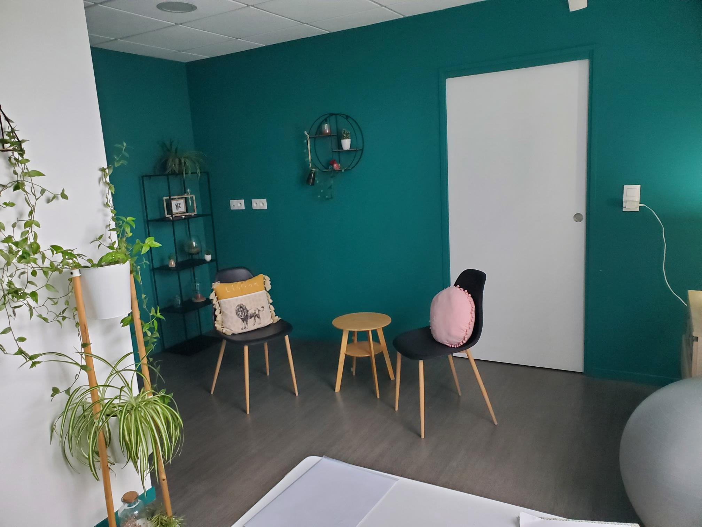

Infos pratiques

12 Rue de la Vallée de l'Ousse, 64420 Artigueloutan : accès
Je vous accueille les lundi et samedi apres-midi sur rendez-vous uniquement.
Tarifs
Adulte/Adolescent : 55€Prévoir environ 1h30 pour la premiere scéance
Séances de suivi :1h
Enfant (de 8 à 14 ans) : 45€
Prévoir entre 45 min et 1h.
Le cabinet accepte les paiements par espèces ou chèque. Les séances ne sont pas remboursées par la sécurité sociale, mais peuvent être prises en charge selon certaines mutuelles.
Retrouvez ici la liste des mutuelles concernées.
Pour toute information ou prise de RDV:
Contactez Olivia au 06-77-80-52-17
ou par mail : eclore.sophrologie.pro@gmail.com
Vous accompagner pour un Mieux-Etre.
Code déontologique de la sophrologie